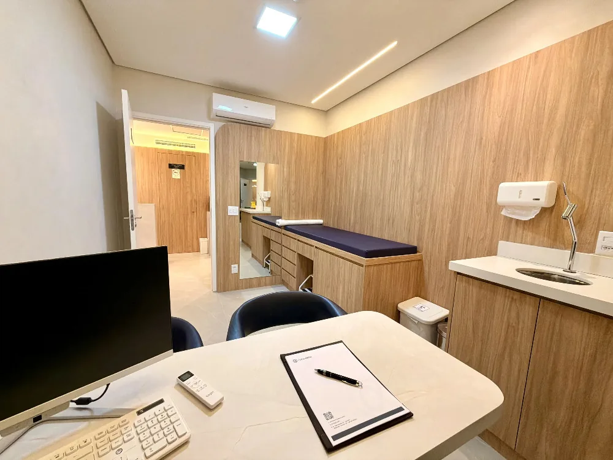
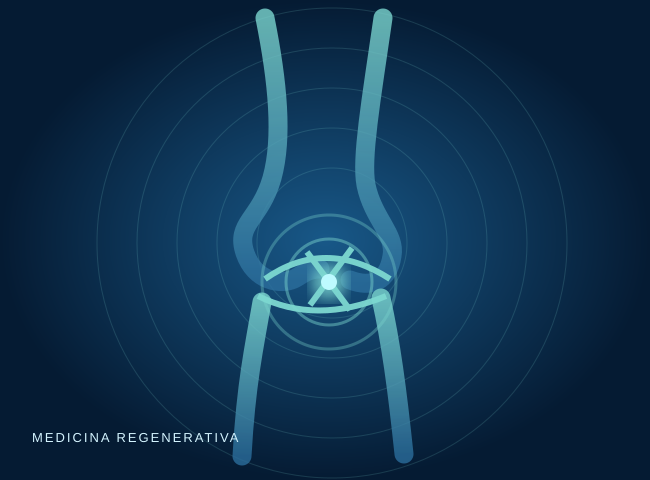

PRP
Plasma rico em plaquetas
Preparado a partir do sangue do próprio paciente.
PRP, aspirado de medula óssea e infiltrações avaliados com critérios clínicos e evidências disponíveis.


Algumas terapias injetáveis podem ser discutidas como parte de um plano de tratamento. A eficácia varia conforme a condição, e certas aplicações ainda têm evidência científica limitada.
Indicação segura começa com diagnóstico e uma conversa sobre benefícios, riscos e limitações.
Preparado a partir do sangue do próprio paciente.
Uso avaliado caso a caso conforme indicação e evidências.
Viscossuplementação utilizada em situações selecionadas.
A avaliação clínica ajuda a diferenciar causas e definir o cuidado apropriado.
Conversar com a equipe ↗Decisões clínicas exigem conversa, planejamento e acompanhamento — não fórmulas prontas.
Esclarecer a causa dos sintomas e a gravidade da condição.
Comparar alternativas e explicar o que se sabe sobre cada terapia.
Monitorar sintomas, função e necessidade de outras condutas.


Informações gerais; a orientação individual depende de consulta.
Não é possível prometer regeneração da cartilagem. A evidência de benefício clínico varia de acordo com a técnica e a condição.
Não. A indicação deve considerar diagnóstico, diretrizes clínicas e expectativas do paciente.
Nem sempre. Dependendo da doença, elas podem não ser adequadas nem suficientes.
Avalie com a equipe quais tratamentos fazem sentido para seus objetivos.

 Dr. Gabriel Lins Abib e Dr. Ricardo QueirozOrtopedia especializada em joelho
Dr. Gabriel Lins Abib e Dr. Ricardo QueirozOrtopedia especializada em joelho